Chapter 3 EDA for text contents
Initially, the project will scoping into wikipedia articles at first, by only looking at the texts for now.
3.1 Tidy text
3.1.1 A look at titles
my_stop_words <- tibble(word = c("station", "school", "mrt", "singapore"))
titles %>%
unnest_tokens(word, title) %>%
anti_join(stop_words) %>%
# anti_join(my_stop_words) %>%
count(word, sort = T) %>%
top_n(n=30) %>%
mutate(word = fct_reorder(word, n)) %>%
ggplot(aes(word, n)) +
geom_col() +
coord_flip()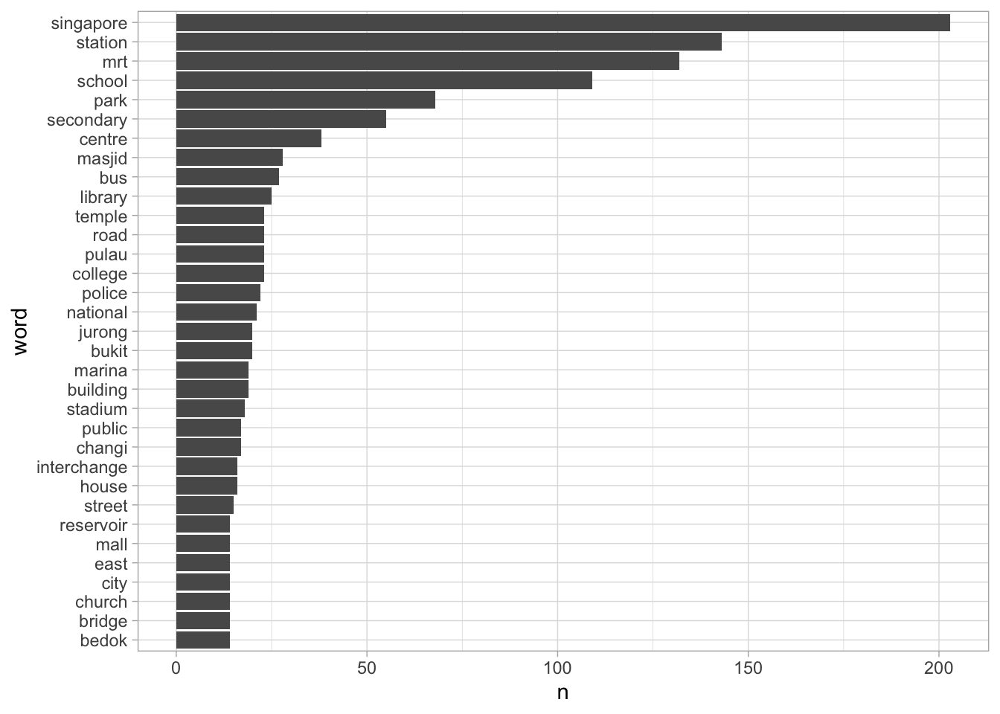
From the titles, it can tell most of the locations are about stations and schools. There are 645 titles, while arount 100 titles are about stations and mrt, and another about 80 titles are about schools.
3.1.2 A look at an articles
Here we can take a look a slot of articles. Here just randomly take the passage about Tuas Biomedical Park.
## [1] "Tuas Biomedical Park (abbreviation: TBP) is a biomedical manufacturing cluster developed by JTC Corporation at the western end of Singapore. The 183-hectare Tuas Biomedical Park I and 188-hectare Tuas Biomedical Park II are located at Tuas View – 20 minutes away from Jurong Port and five minutes from the Tuas Checkpoint to Malaysia. TBP comes with all essential infrastructure, such as roads, power lines, telecommunication lines, sewer pipes and water and gas supplies. Third parties are providing utilities such as steam, natural gas, chilled water and waste treatment services. To improve the appearance of the industrial estate, JTC has spent $6 million on lush landscaping. With the estate's \"plug-and-play\" design, pharmaceutical, biologics, medical device and other biomedical companies can set up manufacturing operations with minimal lead time. They can either move into fully serviced facilities or custom-build their own manufacturing plants. Currently, there are many well-known companies operating in TBP. They include global biomedical players like Merck, Novartis, Pfizer, Wyeth, Genentech and GlaxoSmithKline."| Name | Piped data |
| Number of rows | 1140 |
| Number of columns | 5 |
| _______________________ | |
| Column type frequency: | |
| character | 3 |
| numeric | 2 |
| ________________________ | |
| Group variables | None |
Variable type: character
| skim_variable | n_missing | complete_rate | min | max | empty | n_unique | whitespace |
|---|---|---|---|---|---|---|---|
| title | 0 | 1 | 5 | 90 | 0 | 1140 | 0 |
| text | 0 | 1 | 79 | 80106 | 0 | 1140 | 0 |
| hex_id | 0 | 1 | 1 | 4 | 0 | 381 | 0 |
Variable type: numeric
| skim_variable | n_missing | complete_rate | mean | sd | p0 | p25 | p50 | p75 | p100 | hist |
|---|---|---|---|---|---|---|---|---|---|---|
| pageid | 0 | 1 | 16851182.49 | 17973887.17 | 27318 | 2644529 | 8263434 | 28053295.00 | 63144025 | ▇▂▂▁▁ |
| word_number | 0 | 1 | 659.65 | 927.28 | 13 | 204 | 383 | 753.75 | 12469 | ▇▁▁▁▁ |
wiki_text %>% mutate(word_number = lengths(str_split(text, pattern = " "))) %>%
ggplot() + geom_histogram(aes(x = word_number, y = ..density..))## `stat_bin()` using `bins = 30`. Pick better value with `binwidth`.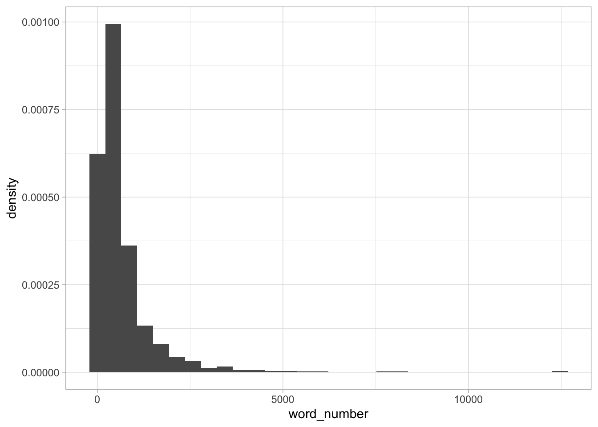
With skimming at the dataset, each articles contains 604 words in averrage. 50% of articles are over 360 words.
3.1.3 Tokenizations & Lemmatization & POS tagging
A token is a meaningful unit of text, such as a word, that we are interested in using for analysis, and tokenization is the process of splitting text into tokens. On a simply way, tokenization means break a sentence into words and filter out the unimportant information which usually refers to words such as the, a, that, so as well as punctuation.
However, tokenization may not promise a clean dataset, since some word in different format and tense will be counted respectively. For example, located and locate, schools and school and so on. Hence, it will require to apply lemmatization to extract the stem of the words in order to reduce the interference.
Also, it will be good if it can tell us whether is a noun or verb, here comes the pos tagging.
tokens <- wiki_text %>% group_by(hex_id) %>%
unnest_tokens(word, text) %>%
anti_join(stop_words) %>% ungroup() %>%
mutate(word = lemmatize_words(word)) %>% # lemmatize
inner_join(parts_of_speech) # pos tag
glimpse(tokens)## Rows: 641,707
## Columns: 5
## $ pageid <dbl> 3956978, 3956978, 3956978, 3956978, 3956978, 3956978, 3956978,…
## $ title <chr> "Malaysia–Singapore border", "Malaysia–Singapore border", "Mal…
## $ hex_id <chr> "5", "5", "5", "5", "5", "5", "5", "5", "5", "5", "5", "5", "5…
## $ word <chr> "malaysia", "singapore", "border", "border", "international", …
## $ pos <chr> "Noun", "Noun", "Noun", "Verb (transitive)", "Adjective", "Nou…| Name | tokens |
| Number of rows | 641707 |
| Number of columns | 5 |
| _______________________ | |
| Column type frequency: | |
| character | 4 |
| numeric | 1 |
| ________________________ | |
| Group variables | None |
Variable type: character
| skim_variable | n_missing | complete_rate | min | max | empty | n_unique | whitespace |
|---|---|---|---|---|---|---|---|
| title | 0 | 1.00 | 5 | 90 | 0 | 1140 | 0 |
| hex_id | 0 | 1.00 | 1 | 4 | 0 | 381 | 0 |
| word | 0 | 1.00 | 1 | 20 | 0 | 14060 | 0 |
| pos | 9977 | 0.98 | 4 | 21 | 0 | 13 | 0 |
Variable type: numeric
| skim_variable | n_missing | complete_rate | mean | sd | p0 | p25 | p50 | p75 | p100 | hist |
|---|---|---|---|---|---|---|---|---|---|---|
| pageid | 0 | 1 | 13125193 | 16462102 | 27318 | 1920900 | 4398470 | 17072954 | 63144025 | ▇▂▁▁▁ |
### Token
# token (freq > 1) count in total
tokens %>%
count(word, sort = TRUE) %>% filter(n > 1)%>% nrow() %>% cat("There are ", ., "tokens (freq > 1).")## There are 10476 tokens (freq > 1).tokens %>%
count(word, sort = TRUE) %>% filter(n > 1) %>%
ggplot(aes(n, ..density..)) + geom_histogram() +
labs(title = "tokens frequency (> 1)")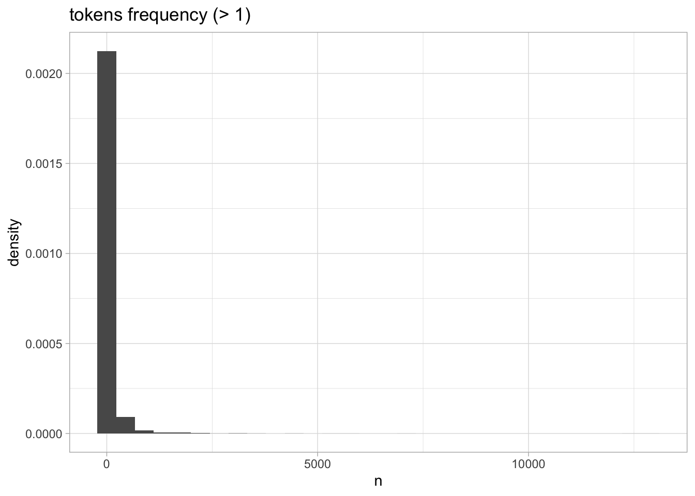
### Pos tag
# How the pos tag distributed?
tokens %>%
ggplot(aes(fct_infreq(pos))) +
geom_bar() +
coord_flip() +
labs(x = "pos tag", title = "POS tag frequency")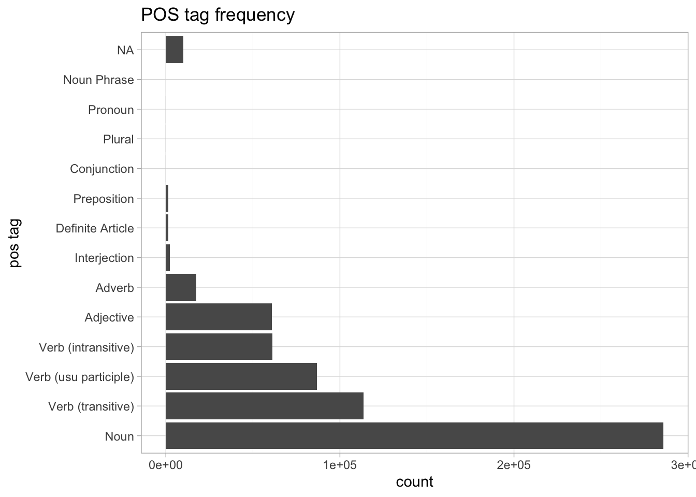
# What is the most occurrin words?
tokens %>%
count(word, sort = TRUE) %>%
top_n(n=30) %>%
mutate(word = fct_reorder(word, n)) %>%
ggplot(aes(word, n)) +
geom_col() +
coord_flip() +
labs(x = "word",
title = "Top 30 frequent words")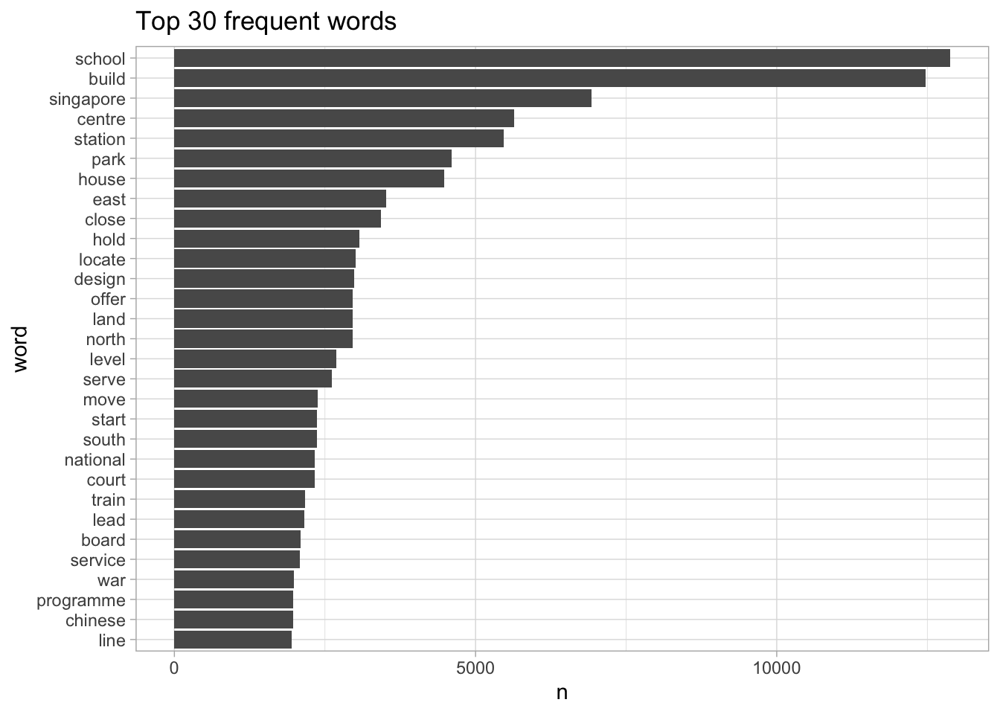
# What is the most occurrin adhectuve or adverb?
tokens %>%
filter(pos == "Adjective" |
pos == "Adverb") %>%
count(word, sort = TRUE) %>%
top_n(n=30) %>%
mutate(word = fct_reorder(word, n)) %>%
ggplot(aes(word, n)) +
geom_col() +
coord_flip() +
labs(x = "Adj. / Adv.",
title = "Most frequent adjective/ adverb")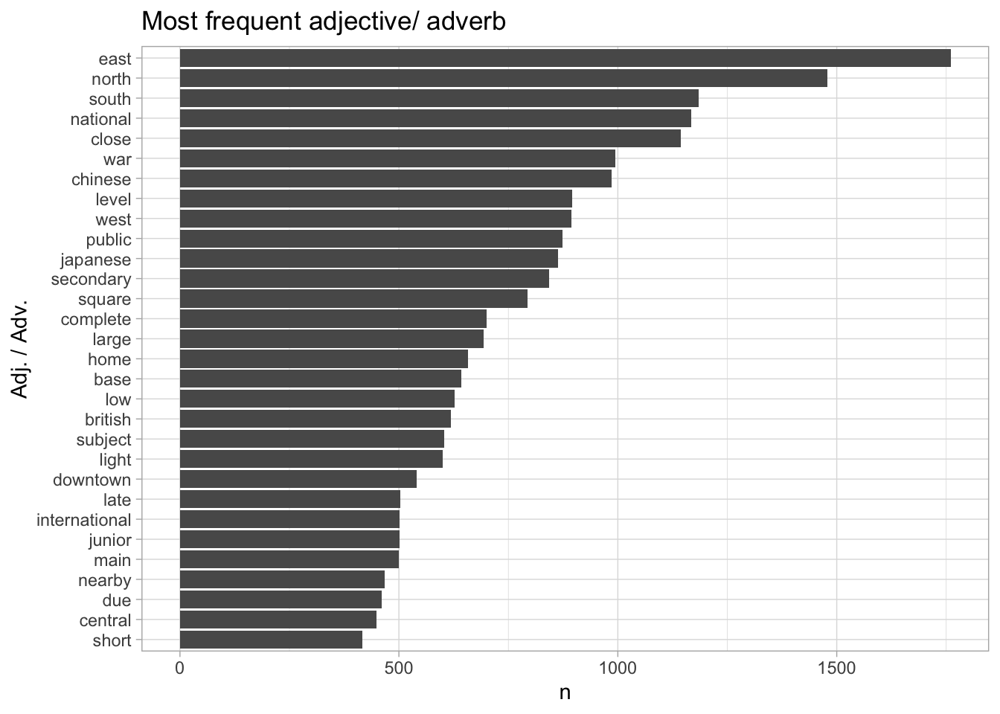
# token %>% count(word, sort = T) %>%
# filter(n > 1) %>%
# wordcloud2::wordcloud2(color = "random-light")With tokenizing and lemmatizing all the articles, there are 641707 words with excluding stopwords, and 14060 unique words remaining. There are 3584 words only occur once in the tokens (remaining 10476).
The articles consist of a large portion of Noun. The interjection just takes a very small part. From the top 30 words, some key words shows significant ranks such as school, station, road, park, centre. Also, the most frequent adjective/adverb for descripiton would be directions (east, north, south), nationality and ethnicity (national, japanese, chinese, british) and so on.
key_word_filter = function(kw) {
d <- hex %>% left_join(tokens %>% filter(word == kw) %>% group_by(hex_id) %>% count(word, sort = TRUE))
tm_shape(d) + tm_polygons(col = "n") + tm_layout(title = kw)
}
key_word_filter("singapore")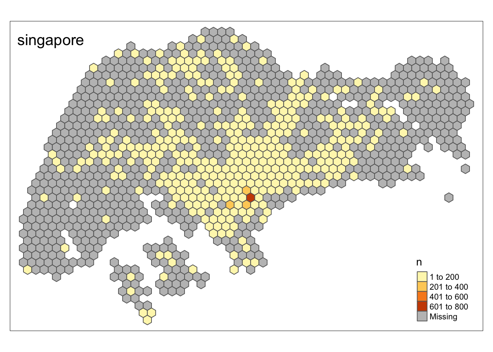
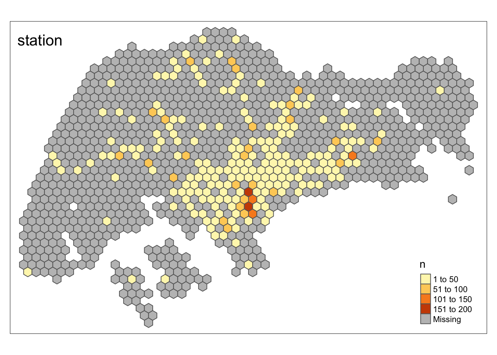
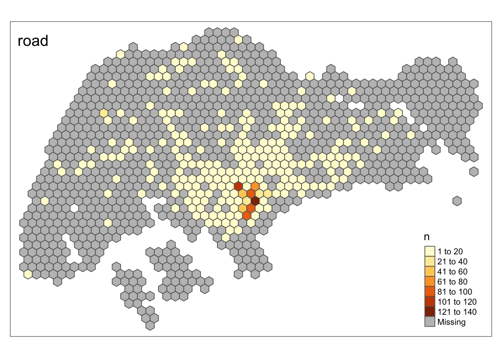
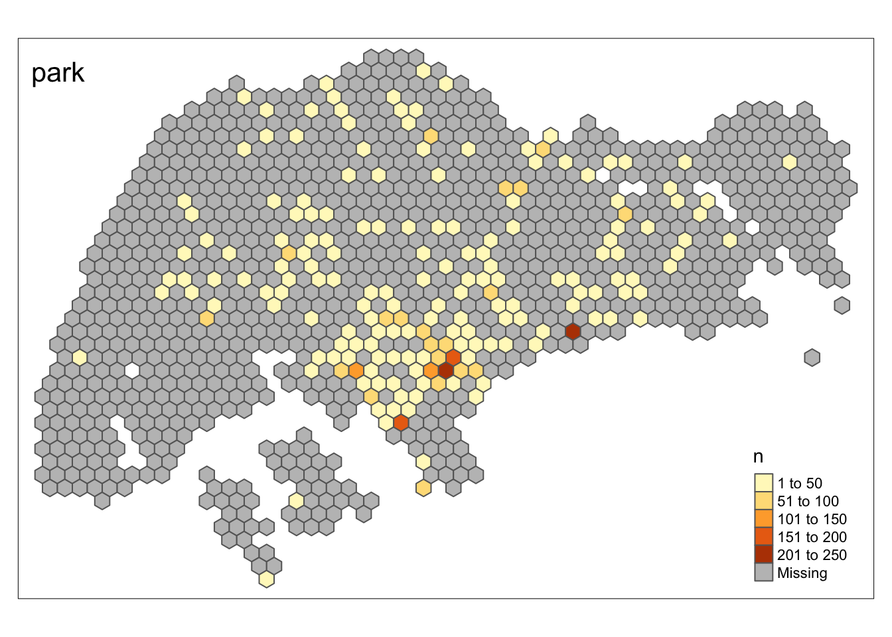
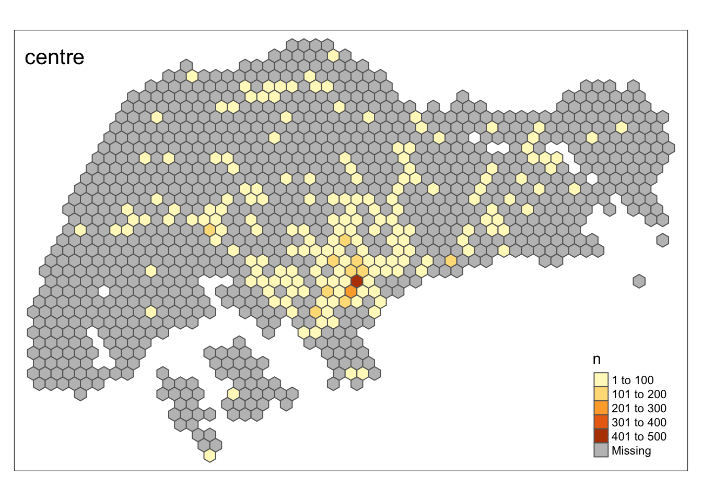
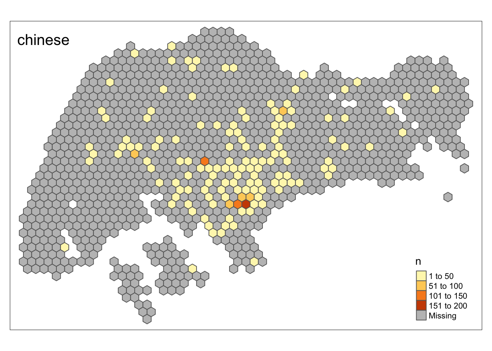
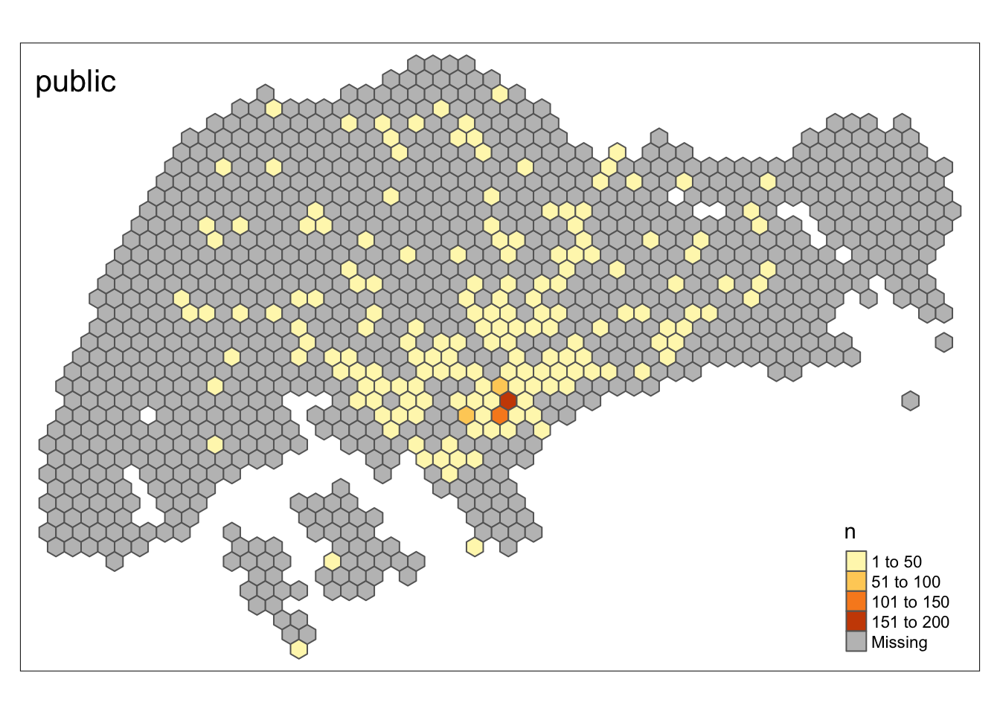
From the plots above, the spatial distribution is more dispersed, while other tokens are more condensed in central areas.
3.2 N-gram
Instead of just looking at one word, there are more common that some phrases occur in pairs. Splitting into one word may break the context of the semantics. In order to catch that, N-gram will help to certain sequence of words arrangement.
3.2.1 Bigram
bigrams <- wiki_text %>% group_by(hex_id) %>%
unnest_tokens(bigram, text, token="ngrams", n = 2) %>% ungroup()
bigrams %>% separate(bigram, c("word1", "word2"), sep = " ") %>%
filter(!word1 %in% stop_words$word) %>%
filter(!word2 %in% stop_words$word) %>%
unite(bigram, word1, word2, sep=" ") %>%
count(bigram, sort = T) %>%
top_n(30) %>%
ggplot(aes(x = fct_reorder(bigram, n), y = n)) + geom_col() +
coord_flip() +
labs(title = "Bigram Top 30", x = "Bigram")## Selecting by n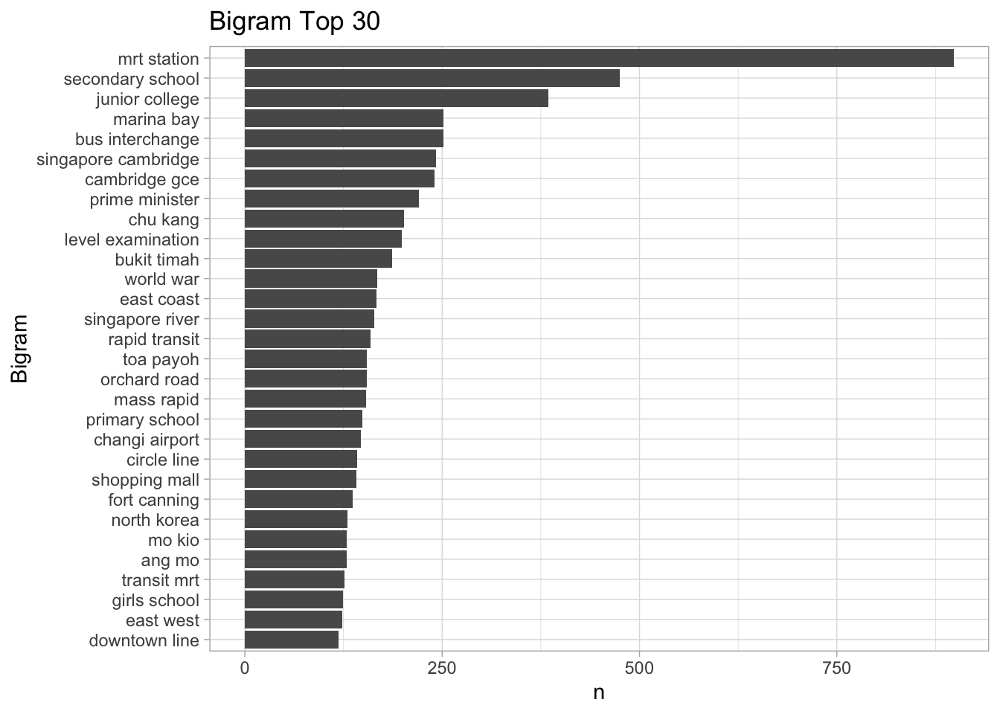
We can see the relation in pair via bigram.
It captures the phrase intead just breaking into two different tokens. Here gives the phrase like “pink dot”, “junior college”, “speakers corner”, “mrt station” and so on. While some terms like “Ang Mo Kio”, “Lee Kuan Yew” consisting of three words has been mistaken, since the bigram just capture two words and giving “chu kang”, “kuan yew” and “lee kuan”.
trigrams <- wiki_text %>% group_by(hex_id) %>%
unnest_tokens(trigram, text, token="ngrams", n = 3, , n_min=1) %>% ungroup()
trigrams_filter <- trigrams %>%
separate(trigram, c("word1", "word2", "word3"), sep = " ") %>%
filter(!word1 %in% stop_words$word,
!word2 %in% stop_words$word,
!word3 %in% stop_words$word) %>%
mutate(word1 = lemmatize_words(word1)) %>% # lemmatize
mutate(word2 = lemmatize_words(word2)) %>% # lemmatize
mutate(word3 = lemmatize_words(word3)) %>% # lemmatize
mutate(word2 = replace_na(word2, "")) %>%
mutate(word3 = replace_na(word3, ""))## Warning: Expected 3 pieces. Missing pieces filled with `NA` in 1520344 rows [1,
## 2, 4, 5, 7, 8, 10, 11, 13, 14, 16, 17, 19, 20, 22, 23, 25, 26, 28, 29, ...].## # A tibble: 73,058 x 4
## word1 word2 word3 n
## <chr> <chr> <chr> <int>
## 1 singapore cambridge gce 239
## 2 mass rapid transit 154
## 3 ang mo kio 129
## 4 rapid transit mrt 126
## 5 world war ii 117
## 6 east west line 114
## 7 gce ordinary level 110
## 8 choa chu kang 108
## 9 lee kuan yew 107
## 10 cambridge gce normal 106
## # … with 73,048 more rowstrigrams_united <- trigrams_filter %>%
unite(gram, word1, word2, word3, sep=" ") %>%
mutate(
gram = str_trim(gram)
)
trigrams_united %>% count(gram, sort=T) %>%
mutate(len = lengths(str_split(gram, " "))) %>%
filter(len == 3) %>%
top_n(30, n) %>%
ggplot(aes(x = fct_reorder(gram, n), y = n)) + geom_col() +
coord_flip() +
labs(title = "Trigram Top 30", x = "Trigram")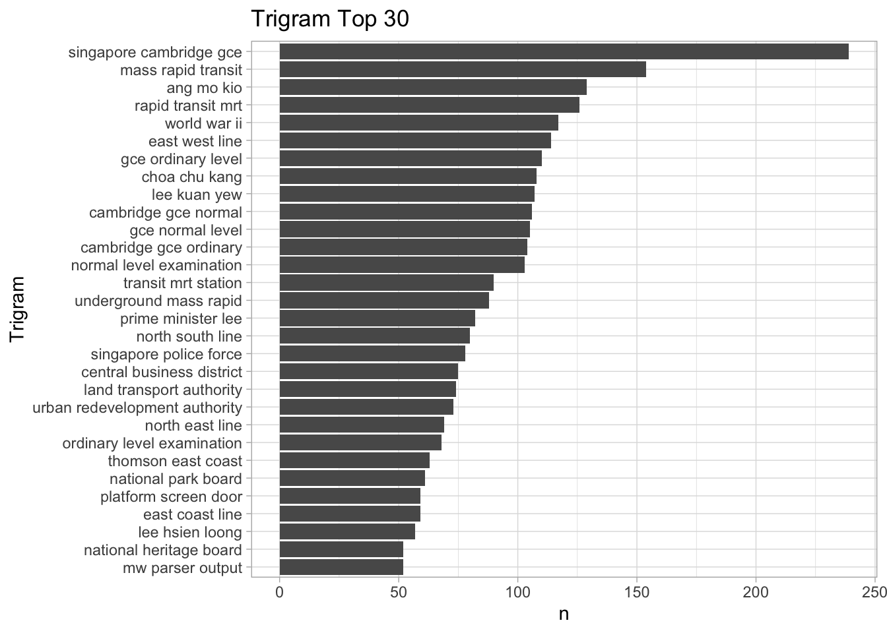
3.2.2 Trigram
It makes more sense to have trigram which gives us some term “ang mo kio”, “central business district”, “choa chu kang” and so on.